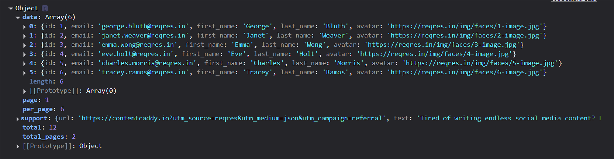
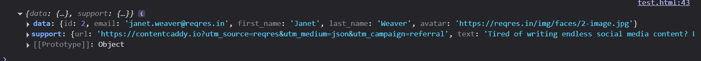
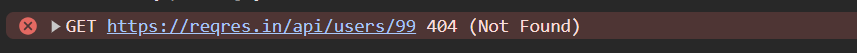

Learning Goals
At the end of this Tutorial, you will be able to:
- Send a request to a web server with the Fetch API.
- Work with the Promise object for chaining multiple requests.
- Work with the Response object.
- Handle server status codes.
Download a new workfile on your computer as described at the link below.
The Fetch API
The Fetch API is a modern alternative to the older XMLHttpRequest API. You use the Fetch API to send HTTP requests to web servers and handle responses. fetch() is a method of the global window object.
You need to supply only a single argument to the fetch() method: the URL of the data that you want to fetch. This URL is known as an endpoint. See below.
const response = fetch(url);The call to the requested resource by the fetch() method is asynchronous. That is, the time taken for the Fetch API to complete its task does not halt the execution of other instructions elsewhere in the web page.
The Fetch API provides an async/await syntax for writing asynchronous code. You may find this a better alternative to the promise chaining syntax.
Below is a very basic example without error handling:
async function fetchUserData() {
// Create a response object to hold the remote data
const response = await fetch("https://reqres.in/api/users/2");
// Convert the response object to a parsed JavaScript object
const data = await response.json();
// Log the data to the console
console.log(data);
}
fetchUserData();The code snippet demonstrates two key JavaScript concepts: Promise and Response objects, which are fundamental to modern asynchronous JavaScript.
Working with the Promise object
Before it returns a Response object, the fetch() method returns a Promise object that can have one of three possible properties:
|
pending |
The request's initial state. |
|
fulfilled |
The request has completed successfully and a value is returned. |
|
rejected |
The request has failed and a reason (error) is returned. |
A Promise is said to be settled or resolved if it is either fulfilled or rejected, but not pending. When a Promise is fulfilled, you can use its then() and catch() methods to handle it.
- The async keyword before the function declaration automatically makes the function return a Promise.
- The await keyword pauses execution until the Promise is resolved or rejected.
In summary, the fetch() method returns a Promise that resolves to a Response object once the network request completes.
Using await with fetch() means your code waits for the network request to complete before continuing, but without blocking the main thread.
If the request completes successfully, the requested data is returned and wrapped inside a Response object.
Update your sample code as shown below.
/**
* Asynchronous function to fetch user data from a remote API.
* Uses the Fetch API with async/await for cleaner promise handling.
*/
async function fetchUserData() {
// Initiate a GET request to the RESTful API endpoint for user with ID 2
// The 'await' keyword pauses execution until the fetch Promise resolves
const response = await fetch("https://reqres.in/api/users/2");
// Check if the HTTP response status is in the successful range (200-299)
// response.ok is true for successful HTTP status codes, false otherwise
if (!response.ok) {
// If response has an error status code, log a message
// This handles cases like 404 (not found), 500 (server error), etc.
console.log("Network response was not ok");
}
else {
// For successful responses, parse the JSON body content
// response.json() returns a Promise that resolves with the parsed JSON
// 'await' is used to wait for the parsing to complete
const data = await response.json();
// Output the parsed user data object to the console
// This will display properties like id, email, first_name, last_name, etc.
console.log(data);
}
}
// Execute the fetchUserData function to start the API request
// This initiates the asynchronous operation
fetchUserData();For more detailed server error-checking, update the if statement as follows:
if (!response.ok) {
console.log(`Network response was not ok - Status: ${response.status} ${response.statusText}`);
}This will show both the numeric status code (like 404, 500, etc.) and the associated status text (like "Not Found" or "Internal Server Error"). This provides more detailed information about what went wrong with the request.
|
100-199 |
Informational responses |
|
200-299 |
Success responses |
|
300-399 |
Redirection messages |
|
400-499 |
Client error responses |
|
500-599 |
Server error responses |
The data from the server is not directly accessible from the Resonse object. So you need to process the data using one of two methods:
|
.text() |
Use this when the Response object contains 'raw' or 'plain' text, or HTML-formatted text. |
|
.json() |
Use this when the Response object contains only data in JSON format. |
Adding further error-checking
The if(!response.ok) condition only checks if the HTTP response status is in the successful range (200-299). It handles scenarios where the server responded properly but with an error status code like 404 (Not Found) or 500 (Internal Server Error).
Adding a try-catch clause provides wider protection against different types of errors than the if(!response.ok) condition checks for. These include:
- Network errors - if the fetch fails completely (e.g., no internet connection, DNS failure)
- Server errors - if the server responds with an error status code (e.g., 404, 500)
- Client errors - if the fetch request is malformed or the server cannot process it
- Parsing errors - if response.json() fails because the response isn't valid JSON
About the try-catch syntax
The try-catch statement in JavaScript allows you to test a block of code for errors and handle any exceptions that occur. The basic syntax is as follows.
try {
// Code that might cause an error
} catch (error) {
// Code to handle the error
}
Here is how it works:
- The try block contains the code that might throw an exception.
- If an exception occurs within the try block, execution of that block stops immediately.
- Control transfers to the catch block.
- The catch parameter (commonly named error or err) contains information about the error.
- After the catch block executes, the program continues running after the try-catch statement.
Update your code as shown below.
/**
* Asynchronous function to fetch user data from a remote API.
* Uses the Fetch API with async/await for cleaner promise handling.
*/
async function fetchUserData() {
try {
// Initiate a GET request to the RESTful API endpoint for user with ID 2
// The 'await' keyword pauses execution until the fetch Promise resolves
const response = await fetch("https://reqres.in/api/users/2");
// Check if the HTTP response status is in the successful range (200-299)
// response.ok is true for successful HTTP status codes, false otherwise
if (!response.ok) {
// If response has an error status code, log a message
// This handles cases like 404 (not found), 500 (server error), etc.
console.log(`Network response was not ok - Status: ${response.status} ${response.statusText}`);
}
else {
// For successful responses, parse the JSON body content
// response.json() returns a Promise that resolves with the parsed JSON
// 'await' is used to wait for the parsing to complete
const data = await response.json();
// Output the parsed user data object to the console
// This will display properties like id, email, first_name, last_name, etc.
console.log(data);
}
} catch (error) {
// Catch network errors, JSON parsing errors, or any other exceptions
console.error("Error fetching user data:", error);
}
}
// Execute the fetchUserData function to start the API request
// This initiates the asynchronous operation
fetchUserData();Working with sample data
If the request completes successfully, the requested data is returned and wrapped inside a Response object. This object has a number of useful properties and methods for working with the data from the server.
Let's work with a an example of fetching the contents of a JSON file.
Paste the following server URIs with which you can use the fetch() method.
const URI_1 = "https://reqres.in/api/users";
const URI_2 = "https://reqres.in/api/users/2";
const URI_3 = "https://jsonplaceholder.typicode.com/users";
const URI_4 = "https://pokeapi.co/api/v2/eevee";Update the URL in your fetch() method as follows:
const response = await fetch("URI_1");
In the DevTools Console, you can see the result of the call to the fetch() method is a Promise.
Update your code to request data on a single user (with an id of 2) and view the result in your Console.
const response = await fetch("URI_2");

What would happen if you requested data on a non-existent user. For example, a user with an id of 99? Update your sample code as shown below.
Your Console should display the error below.
Pokemon project
Follow these steps:
-
Create an HTML file with the content below:
<!DOCTYPE html> <html lang="en"> <head> <meta charset="UTF-8"> <meta name="viewport" content="width=device-width, initial-scale=1.0"> <title>Pokemon Finder</title> </head> <body> <h1>Find your favorite Pokemon</h1> <input type="text" id="pokemonName"> <button id="btn_1" onclick="fetchData()">Find</button> <img id="pokemonSprite" style="display: none"> <script></script> </body> </html> -
Inside the <script> tag, add the following JavaScript
code:
async function fetchData(){ try { const pokemonName = document.getElementById("pokemonName").value.toLowerCase(); const response = await fetch(`https://pokeapi.co/api/v2/pokemon/${pokemonName}`); if(!response.ok){ throw new Error("Could not fetch resource"); } const data = await response.json(); const pokemonSprite = data.sprites.front_default; const imgElement = document.getElementById("pokemonSprite"); imgElement.src = pokemonSprite; imgElement.style.display = "block"; } catch(error){ console.error(error); } }